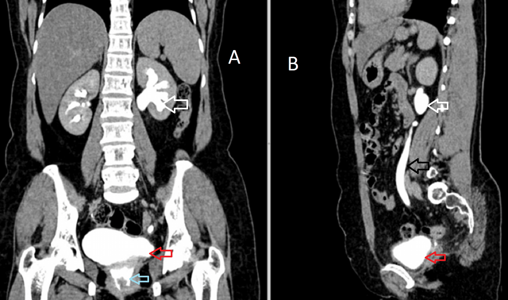
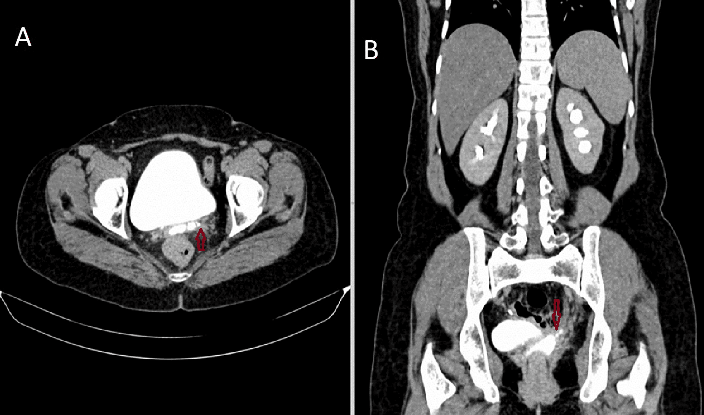

Página 4 · Parte 1 · Fístulas genitais
O tampão que decide: corou é bexiga, não corou é ureter
COROU = BEXIGA. NÃO COROU = URETER. As duas leituras não valem a mesma coisa — uma dá certeza, a outra dá probabilidade.
Corou é bexiga, não corou é ureter — e a assimetria das duas leituras
A leitura é binária e a frase é curta: se o tampão corou, há certeza de fístula vesicovaginal; se não houve coloração, trata-se provavelmente de fístula ureterovaginal. Repare que as duas metades não têm o mesmo peso, e essa diferença é conteúdo, não estilo. "Corou" prova. O corante foi colocado dentro da bexiga e apareceu na vagina — só existe um jeito de ele ter feito esse trajeto, e é atravessando uma comunicação vesicovaginal. Não há leitura alternativa. "Não corou" apenas sugere. O tampão molhado sem corar diz que chega urina à vagina e que essa urina não veio da bexiga corada — o que aponta para cima, para o ureter, mas admite outras explicações (corante insuficiente, tempo curto, trajeto obstruído por edema). Por isso a conduta muda de natureza: com o tampão corado, o diagnóstico está fechado e o próximo passo é medir; com o tampão molhado sem corar, o diagnóstico está encaminhado e o próximo passo é provar por imagem. E é assim que a questão se apresenta: o enunciado traz o resultado de um exame especular após cateter transuretral com corante e, conforme o tampão corar ou não corar, pede o diagnóstico. Reconhecer esse desenho de enunciado já é meio caminho — quando o texto descrever sonda, corante e tampão, a pergunta é sempre a mesma, muda só a resposta.
O teste em si não é novidade: no diferencial da perda urinária ele existe para responder de onde vem a urina ↗A7. O que muda aqui é o que se faz com a resposta — a partir deste raciocínio, cada saída do teste tem um exame seguinte, um tamanho a medir e uma via cirúrgica no fim da linha.
A cistoscopia está sempre indicada: o que ela vê e o que ela mede
Diante de suspeita de fístula vesicovaginal, a cistoscopia está SEMPRE indicada. Vale sublinhar o advérbio, porque é raro num tema em que quase tudo se individualiza. A câmera entra pela uretra e faz duas coisas. A primeira é ver: identificar o orifício fistuloso na parede vesical, sua relação com o trígono e com os óstios ureterais, e reconhecer que se trata de um defeito mucoso focal, e não de uma lesão vegetante. A segunda, e a que decide conduta, é medir: a cistoscopia informa o tamanho da fístula, e é por isso que ela direciona a estratégia terapêutica. Guarde o encadeamento, porque ele é o esqueleto da etapa seguinte — quem decide a via é o tamanho, e quem mede é a cistoscopia.
A endoscopia também define a posição do orifício, e aqui é preciso desfazer um homônimo antes que ele confunda. Neste raciocínio, "fístula alta" significa localização alta na bexiga — o orifício supratrigonal, acima do trígono, mais próximo da cúpula vesical; "baixa" é o orifício infratrigonal, cervical ou de uretra proximal. Essa distinção é anatômica e tem tradução cirúrgica direta: a supratrigonal costuma ser abordada por via transvesical (abdominal), a infratrigonal por via transvaginal. É um sentido diferente do que "alta" carrega quando se compara os dois tipos de fístula no diferencial da perda urinária, onde "alta" nomeia a ureterovaginal por estar acima da bexiga ↗A7. Duas leituras legítimas da mesma palavra: alta na bexiga (posição do orifício, decide a via) e alta no trato (o ureter, decide o tipo). Quando o enunciado disser "alta", pergunte-se alta em relação a quê.
Os corantes e os quatro passos do teste
Recorre-se a corantes para confirmar o diagnóstico, e dois são nominados: o azul de metileno e o índigo carmim. A finalidade é ter a confirmação de que se trata realmente de fístula vesicovaginal — ou de ureterovaginal. A sequência é curta e precisa ser executada nesta ordem: Passo 1 — coloca-se um cateter transuretral; Passo 2 — injeta-se o corante pelo cateter, de modo que ele preencha a bexiga e só a bexiga; Passo 3 — no exame especular, posiciona-se um tampão vaginal; Passo 4 — observa-se a coloração do tampão. A lógica do teste está inteira no Passo 2: ao corar exclusivamente o conteúdo vesical, cria-se um marcador que só chega à vagina se houver comunicação com a bexiga. A urina que vier do ureter chega sem passar pelo corante — molha, mas não pinta.
Existe um refinamento que amplia a leitura sem quebrar o binário, e vale como diferencial de quem estuda mais: o teste do duplo corante. Administra-se fenazopiridina por via oral, que é excretada pelos rins e cora de laranja a urina que vem de cima, e instila-se azul de metileno na bexiga. Aí a compressa passa a ter três leituras possíveis: azul (vesicovaginal), laranja sem azul (ureterovaginal) e as duas cores (coexistência das duas fístulas). O desfecho segue binário na maioria das questões, mas o segundo nível de informação está lá.
Quando o tampão não cora: o trato alto entra em cena
Quando não há coloração, é nesse caso especificamente que se indica a urografia excretora. A urografia é o exame pedido quando o intuito é a avaliação do trato urinário superior — ela mostra o contraste eliminado pelo rim descendo pelo ureter e, havendo fístula ureterovaginal, extravasando antes de chegar à bexiga. E existe um número que justifica olhar para cima mesmo quando o tampão corou: em 10 a 15% dos casos de fístula vesicovaginal coexiste lesão/fístula ureteral associada. Não é detalhe: a literatura descreve o estudo radiológico do aparelho alto como mandatório nessas pacientes, justamente porque uma fístula ureteral não diagnosticada transforma um reparo vesical bem-feito num fracasso inexplicável. E há um cenário que dispara essa preocupação sozinho: diante de paciente submetida a histerectomia radical, é preciso pensar também na possibilidade de fístula ureterovaginal — e é aí que se indica a urografia excretora.
Tomografia e ressonância: opcionais, individualizadas
Exames de imagem como tomografia computadorizada ou ressonância magnética têm avaliação opcional: individualiza-se caso a caso para saber se há ou não indicação. Servem quando se precisa de mapa anatômico do trajeto, quando há suspeita de coleções ou de doença tumoral concomitante, ou quando o planejamento cirúrgico exige entender a relação do trajeto com estruturas vizinhas. Não são etapa obrigatória e não substituem nem a cistoscopia nem a urografia no que cada uma faz de melhor.
Convencional e radical: a heurística e a ressalva que é conteúdo
A regra prática que a banca usa é esta: fístulas vesicovaginais normalmente resultam de histerectomias convencionais; as ureterovaginais, das histerectomias mais radicais. A razão é anatômica e vale mais que a memorização: a histerectomia radical disseca o ureter para fora do túnel parametrial, expondo-o e desvascularizando-o; a convencional não faz isso, mas trabalha colada à bexiga, e é a cúpula vesical que corre risco no encerramento do fundo de saco vaginal. E agora a ressalva, que é parte do item e não rodapé: isso não é uma regra — apenas eventualmente essa relação se traduz na prática. Traduzindo em números: a relação é de enriquecimento de risco, não de exclusividade. A histerectomia radical produz as duas fístulas, com taxas próximas entre si; ou seja, a radical não troca a vesicovaginal pela ureterovaginal — ela acrescenta a ureterovaginal. E, em volume absoluto, a histerectomia convencional gera mais fístulas vesicovaginais do que a radical gera ureterovaginais, simplesmente porque se fazem ordens de grandeza mais histerectomias simples. Usar a heurística para orientar a suspeita é correto; usá-la para fechar diagnóstico é o erro que a banca arma. O que fecha diagnóstico é o tampão.
Decodificador do teste do corante
Exame especular após cateter transuretral com corante. Leia o tampão vaginal.
TAMPÃO COROU
Fístula vesicovaginal — certeza. Cistoscopia: dá o tamanho e direciona a conduta.
TAMPÃO NÃO COROU
Provável fístula ureterovaginal. Urografia excretora.
Comece pelo cateter transuretral.
Duplo corante: fenazopiridina oral (laranja = vem de cima) + azul intravesical (= vem da bexiga).

A — Figura 2 · repercussão no trato alto
B — Figura 3 · trajeto confirmadoImagem A — Figura 2: Uro-TC tardia mostra dilatação do trato urinário esquerdo e contraste no coto vaginal, sugerindo comunicação urinária anormal.
Imagem B — Figura 3: O trajeto preenchido por contraste entre o ureter esquerdo e o coto vaginal confirma a fístula ureterovaginal.
Na Figura 2, a uro-TC em fase excretora tardia, aos 15 minutos, mostra o sistema pielocalicial esquerdo dilatado (seta branca), o ureter esquerdo opacificado e dilatado (seta preta), a bexiga contrastada (seta vermelha) e contraste no coto vaginal, caudal à bexiga (seta azul). O conjunto demonstra repercussão no trato alto e destino vaginal anômalo do contraste, mas ainda não individualiza diretamente o trajeto fistuloso.
Na Figura 3, os cortes axial e coronal mostram, pelas setas vermelhas, o trajeto preenchido por contraste que conecta o ureter esquerdo ao coto vaginal. Esta é a prova direta da origem ureteral e confirma a fístula ureterovaginal.
Leitura comparativa: Figura 2 = repercussão e sinais sugestivos; Figura 3 = demonstração direta do trajeto.
Atenção ao homônimo: “trato urinário alto” e “fístula alta” não são a mesma classificação. No campo intravesical, alta significa supratrigonal, isto é, uma relação anatômica com o trígono — nunca uma distância em centímetros. Estas imagens pertencem ao “andar de cima”: trato alto e teste confirmatório; não substituem nem redefinem a vista intravesical do esquema acima.
Diferencial obrigatório: refluxo vesicoureteral é fluxo retrógrado da bexiga para o ureter pela junção ureterovesical; não cria comunicação com a vagina e, portanto, não é fístula. Pielografia ou uro-TC que mostre somente hidroureteronefrose, opacificação do sistema coletor ou refluxo, sem extravasamento para o coto vaginal ou visualização do trajeto, pode avaliar o trato urinário, mas não confirma fístula. Comunicação partindo da bexiga para a vagina favoreceria fístula vesicovaginal, não ureterovaginal.
Reddy SG, Parihar P, Dhande R, Gupta RG, Nagendra V. Ureterovaginal Fistula Post Vaginal Hysterectomy. Cureus. 2022;14(10):e30694. Figuras 2–3. © 2022 Reddy et al. Licenciado sob Creative Commons Attribution 4.0. DOI: 10.7759/cureus.30694. Fonte PMC. Consentimento: o artigo declara que o consentimento foi obtido ou dispensado para todos os participantes; não informa qual das duas situações ocorreu. Sem identificadores pessoais visíveis. Alterações: nenhuma. Acesso em 28/07/2026.
Quiz — fixação
Paciente com perda vaginal contínua três semanas após histerectomia total abdominal. Realiza-se cateterismo transuretral com instilação de azul de metileno e coloca-se tampão vaginal. Após o período de observação, o tampão encontra-se úmido, porém sem coloração azul. A conclusão e a conduta corretas são:
- Gabarito C. Tampão úmido prova que há urina chegando à vagina; tampão sem corar prova que essa urina não veio da bexiga, que estava corada — logo, ela vem de cima, do ureter. É o desfecho que roteia para a urografia excretora, o exame que avalia o trato urinário superior.
- (A) ignora metade do resultado: o tampão umedeceu, então o teste é positivo para fístula — só não é a vesical.
- (B) e
- (D) exigiriam o tampão corado: um trajeto vesicovaginal, mesmo puntiforme, deixa o corante passar; calibre pequeno reduz o débito, não impede a coloração. Além disso, (D) erra duas vezes, porque "reparo imediato" contraria a lógica de tempo do tratamento.
- Por que cair na (B): confunde-se "molhou" com "corou" — o aluno lê que houve perda e fecha o diagnóstico mais frequente, esquecendo que o corante é justamente o marcador que separa os dois endereços.
Sobre a cistoscopia na investigação da fístula vesicovaginal, é correto afirmar:
- Gabarito B. A cistoscopia é o exame de indicação universal nessa suspeita, e o que ela agrega além de visualizar o orifício é a medida — e é o tamanho que decide via e momento do reparo.
- (A) rebaixa um exame obrigatório a exame de resgate; mesmo com tampão corado (diagnóstico fechado), a cistoscopia continua necessária para medir e localizar.
- (C) troca os papéis: a câmera enxerga a bexiga por dentro e não alcança o trato alto — quem demonstra o extravasamento ureteral é a urografia.
- (D) inventa uma contraindicação; nas complexas, a avaliação endoscópica da extensão do dano é ainda mais necessária.
- Por que cair na (C): o aluno guarda "cistoscopia = exame da fístula" e generaliza demais, esquecendo que existem dois andares do trato urinário e que cada um tem seu exame — e é essa separação que os 10-15% de coexistência tornam obrigatória.
Sobre a relação entre o tipo de histerectomia e o tipo de fístula:
- Gabarito B. A associação existe e tem base anatômica — a radical disseca o ureter, a convencional trabalha colada à bexiga —, mas é enriquecimento de risco, não exclusividade: a ressalva faz parte do conteúdo.
- (A) é a inversão mais sedutora e é falsa: a radical não troca um risco pelo outro, ela acrescenta a ureterovaginal ao risco vesical que já existia.
- (C) contraria o dado mais firme do tema — a histerectomia convencional é disparado a causa nº 1 de fístula vesicovaginal.
- (D) transforma heurística em lei e, pior, dispensa o único teste que fecha o diagnóstico.
- Por que cair na (A): a formulação "convencional → vesical / radical → ureteral" é ensinada como par simétrico, e o cérebro completa a simetria imaginando exclusão mútua — quando o que existe é sobreposição com pesos diferentes.
Revisão ativa
- Se o tampão corar e a paciente tiver antecedente de histerectomia radical, o que ainda precisa ser investigado antes de programar o reparo — e por quê?
- Por que "corou" fecha o diagnóstico e "não corou" apenas o encaminha? O que poderia produzir um falso "não corou"?
- Quando o enunciado disser "fístula alta", que pergunta você precisa fazer antes de escolher a via?
Com o diagnóstico fechado e o orifício medido, a decisão seguinte surpreende — porque a primeira conduta numa fístula vesicovaginal não é operar.